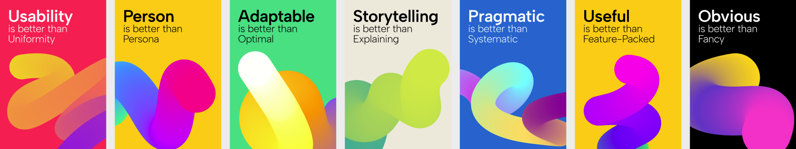
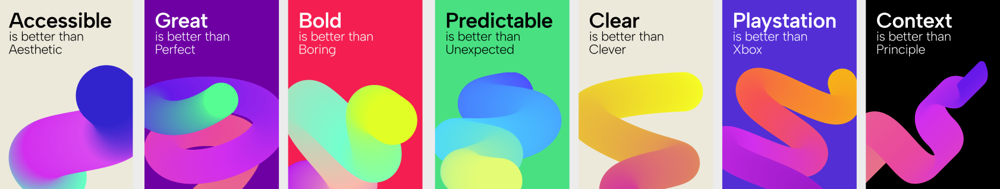

User Experience
Table of contents
Now that we know how to create good interactions, let’s focus on user experience.
User Experience Principles
🖌️ Aesthetic-Usability Effect
This law suggests that designs which are aesthetically pleasing are perceived as easier to use by people. It’s not just about looking good; a well-designed interface can make users more forgiving of minor usability issues. This effect shows the power of first impressions and the importance of visual appeal in user interface design.
👆 Fitts’s Law
This principle focuses on the time required to move to and select a target, such as a button on a screen. The law states that the time is dependent on the distance to the target and its size. Larger targets closer to the user are faster to select, influencing how designers place important buttons and options in an interface to make them easily accessible.
🚦 Hick’s Law
This law highlights the relationship between the number and complexity of choices available and the time it takes for a person to make a decision. As the number of options increases, so does the decision time. This is particularly important in designing menus, settings, and navigation to avoid overwhelming users with too many choices at once.
🌐 Jakob’s Law
This law states that users’ expectations are shaped by their experiences with other websites and applications. If a website functions in a similar manner to others that the user is familiar with, the learning curve is reduced, and the user is more likely to have a positive experience. This underscores the importance of adhering to common design conventions and standards.
🧲 Law of Proximity
According to this principle, objects that are close to each other are perceived as more related than objects that are spaced further apart. Designers use this law to group related information and controls, helping users intuitively understand how different parts of the interface are connected.
🧮 Miller’s Law
This psychological principle suggests that the average person can keep only about 7 (plus or minus 2) items in their short-term memory. This has implications for design, indicating that interfaces should be simple and not overload users with too much information at once.
⚖️ Pareto Principle
Also known as the 80/20 rule, this principle posits that 80% of effects come from 20% of the causes. In UX, this might mean that a small number of features are responsible for the majority of a product’s usefulness or that a small portion of users generate most of the traffic.
🎢 Peak-End Rule
This rule suggests that people judge an experience not by the overall journey but by how they felt at its most intense point (the peak) and at its end. This is crucial for designing experiences that leave a lasting positive impression, even if not every moment was perfect.
 